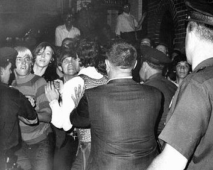

Stonewall
the first pride
was a Riot

Overview
- Series of Riots and Protests by Queer people
- began in the early morning hours of June 28, 1969
- ended on July 3, 1969
- started after a police raid at Stonewall Inn, Lower Manhattan
- start of the modern LQBTQ+ movement
- June became the global gay-pride month in honor of stonewall
Events leading up to Stonewall
- Homosexuality was not yet widely accepted
- Homophobic legislation
- other political movements
- gay bars and clubs were illegal
- Homosexuality was considered a mental disorder
The Riots
the first night
- 4 undercover police officers were in the Stonewall Inn
- at 1:20am, 8 more officers entered the inn and began the raid
- cross-dressers and trans women were arrested, the identity of others was checked
- Stormé DeLarverie escaped the police and shouted: "Why don't you guys do something?" as she was put in a police van
Violence breaks out
- the crowd outside the Stonewall Inn became violent
- they slashed a few tires of police vehicles
- the crowd threw rocks and bottles at the officers
- Garbage Cans were lit
- Police fled to the inside to protect themselves
“
You've been treating us like shit all these years? Uh-uh. Now it's our turn!
It was one of the greatest moments in my life.
- Sylvia Rivera
The Riots continue
- the Police sent riot control forces
- Trans women of color were at the frontline fighting against officers
- riots continued the following night and for 5 more days

Aftermath
- rioters took part in organizational meetings
- older organizations were deemed too mild
- the gay liberation front (GLF) was founded
- the GLF organized protests in the following months and years

Legacy
- Gay rights groups founded around the world
- yearly pride month and marches in June
- in western countries the legislation improved

Homophobia today
- Homophobia is still present in modern society
- many countries still prohibit same-sex marriage
- in many countries, homosexuality is still illegal

Sources:
- https://en.wikipedia.org/wiki/Stonewall_riots
- https://www.bpb.de/kurz-knapp/hintergrund-aktuell/292948/die-geburtsstunde-des-gay-pride/
- Documentary: The death and life of Marsha P. Johnson - David France/Netflix
- https://en.wikipedia.org/wiki/Gay_Liberation_Front
- The LGBTQ+ and the Gay Liberation Front | Stuart Feather | TEDxHultLondon